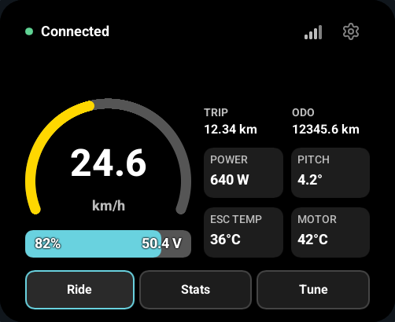
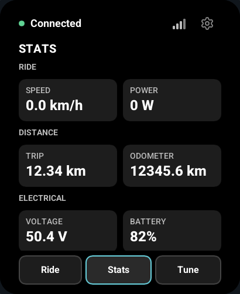
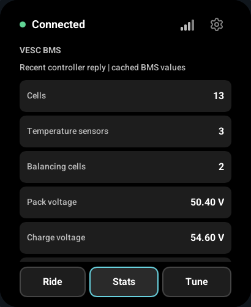
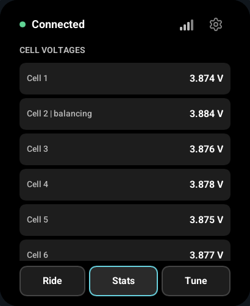
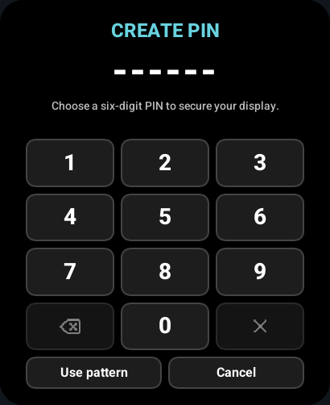
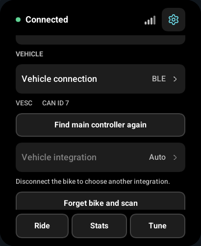

The main screens keep the ride information close and the configuration controls deliberate. The same interface works at 0°, 90°, 180° and 270°. Tap Settings > Orientation to advance through those angles; the selection is saved across restarts.

Ride
Speed uses your saved km/h or mph preference. Temperature units are configured separately. Pitch is shown with the degree symbol. In portrait, TRIP and ODOMETER occupy the upper-left and upper-right corners of the speedometer area. The gauge's layout box follows its actual painted and text bounds rather than a full-circle placeholder. The dashboard uses the selected integration's live VESC data; it does not calculate a substitute speed when messages are missing.
Connection setup and data freshness are separate. A Bluetooth or wired link can be established before valid telemetry arrives. Readings become -- when they expire, and configuration controls stay unavailable until their requirements are met.
Stats
The bottom tabs are Ride, Stats and Tune. Stats is a read-only, vertically scrolling view. It follows your independent speed and temperature units; missing or expired values show --.
| Group | Available controller values |
|---|---|
| Ride and distance | Speed, power, trip and lifetime distance. |
| Electrical and energy | Voltage, battery charge, input/motor current, duty cycle, eRPM, consumed/charged Ah and Wh. |
| Temperatures and attitude | Controller/motor temperatures, pitch and roll. |
| Controller | PID position, controller ID/count and reported uptime. |
When available, the BMS section adds pack values, cell voltages, balancing state, temperatures, state of charge (SOC) and state of health (SOH). These are read-only standard BMS command 96 replies. The display makes an initial probe when the vehicle becomes Ready, then polls at 1 Hz while Stats is open. While a phone is connected, BMS polling is enabled only after a command-96 reply has established support in the current vehicle session. They are values cached by the VESC, without a BMS-source timestamp: a newly received reply does not prove that the underlying BMS measurement is new. A real BMS has not yet been validated with this display.

Scroll further to inspect optional BMS details and cell values:


Tune
WFB offers Eco, Cruise and Sport ride-response presets plus speed-limit controls. Select a draft, tap Apply, review the confirmation and apply the change while the bike is stopped. The firmware checks connection identity, freshness, speed and controller fault again before enqueueing the command.
A queued tuning command is not a readback. The current protocol does not document an acknowledgement for these writes. Selecting a preset in the UI does not prove it is the bike's stored preset.
Wheel-e and generic VESC do not show WFB-only tuning controls. Use VESC Tool for configuration that this display does not expose.
Vehicle settings
Leave the integration at Auto (the default) to detect a supported package through controller probes. Choose a specific integration to require that package. Disconnect or forget the bike to change the selection. The main-controller discovery status explains which controller the display is using; Find main controller again reruns the read-only discovery process when the link is available.
These controls now live under Settings > Vehicle. Lock controls and the locked-screen timeout are grouped under Settings > Screen lock. Unsupported package features are not enabled by selecting a different page.

Settings
The cog is always in the upper-right header. The vertically scrolling list groups Display, Units, Vehicle, Screen lock, Phone connection and System controls.

| Setting | Behavior |
|---|---|
| Orientation | Rotates the interface and touch mapping together. |
| Speed units | Switches km/h and mph. |
| Temperature units | Switches °C and °F independently of speed units. |
| Brightness | Sets the brightness restored after waking the locked display. |
| Vehicle connection | Selects BLE, CAN or UART when wired interfaces are configured for the target. |
| BLE name | Active WFB forces WFB and hides this control. Wheel-e and generic VESC use the editable saved name (default WB Disp). Leaving WFB restores that preference without writing a replacement to NVS. |
| BLE proxy | Enables the phone connection; off by default. |
| Wi-Fi | Scans, connects, forgets a network or enters a hidden SSID. |
| Firmware updates | Checks and installs a matching GitHub release image. |
| About | Shows version, board identity and live diagnostics. |
Touch and gestures
Horizontal swipes change the three primary pages and follow your finger. Short or reversed drags snap back. Vertical motion scrolls Stats and Tune content rather than changing pages. Moving pages do not accept accidental Apply or device-selection taps.
The layout keeps content inside the panel's rounded corners. Changing orientation cancels a held gesture; lift your finger before starting another touch. The keyboard and PIN entry also respect the safe area.
Bike BLE signal
The bars beside the phone indicator show the display's BLE signal from the bike, sampled once per second. Fewer bars mean a weaker signal; one active bar is yellow. They are hidden for CAN/UART or while no valid BLE reading is available. Signal strength is not a distance or throughput measurement.
When a phone is connected
A green phone icon immediately left of the cog indicates an authorized phone connection. The main header text remains the bike status, showing Connected for a healthy ready link. Read-only display telemetry continues alongside the phone connection. Phone traffic takes priority between complete packets; an unfinished phone packet or phone firmware transfer can temporarily pause display polls. The display uses its own tracked replies and may also reuse a phone setup reply when its controller identity proves it belongs to the selected bike. Replies from a different CAN controller cannot replace the display's vehicle readings. Configuration writes and display firmware updates remain paused until the phone disconnects. If main-controller discovery had not finished when the phone connected, discovery waits until it disconnects.
The phone chooses its own CAN controller. The proxy never substitutes the display's selected main controller. See connections.